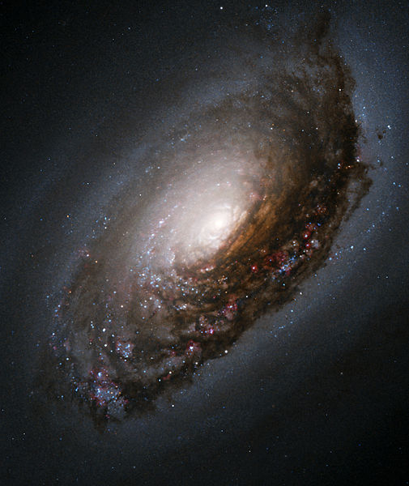

Guia das galáxias

Olho Negro
Descrição
A galáxia do Olho Negro (Messier 64, NGC 4826) é uma galáxia espiral localizada a aproximadamente dezessete milhões de
Dados Interessantes
- Os cientistas acreditam na hipótese de que ela seja o resultado da colisão entre duas galáxias.
- A galáxia espiral foi descoberta por Edward Pigott em 23 de março de 1779
- Pode ser vista com bons binóculos
Outras galáxias: Galáxia de Andromeda, Grande Nuvem de Magalhães